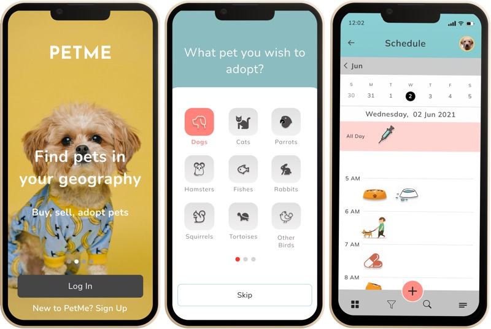
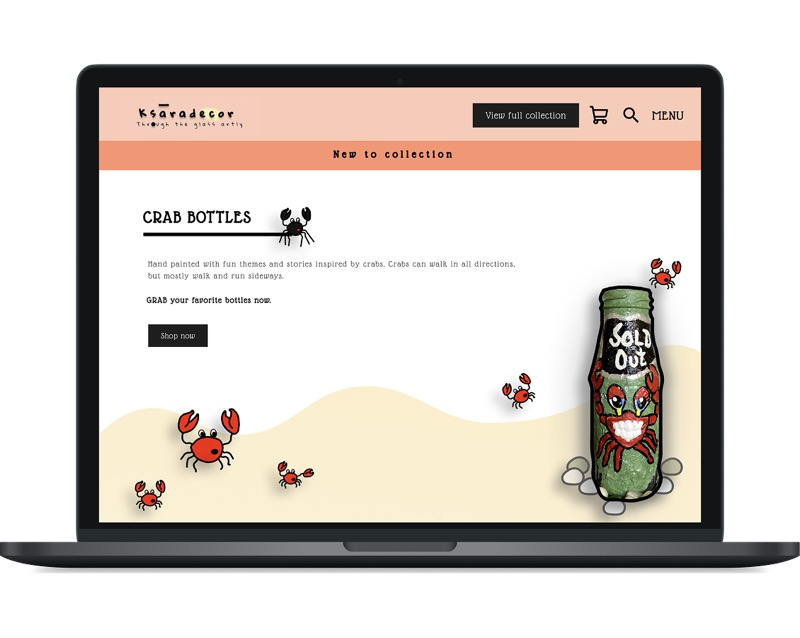
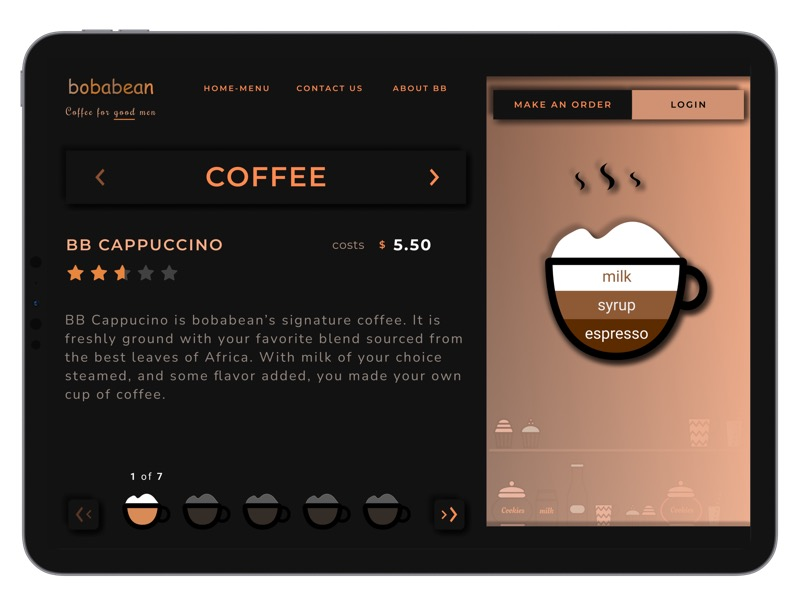
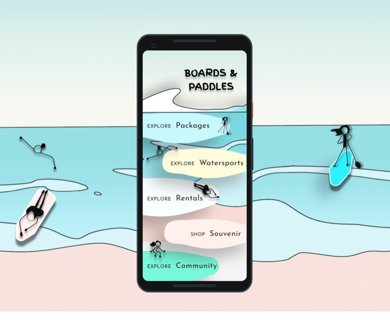

Portfolio · Product Strategy, UX & Data, Builder PM
Building with AI - improving strategy, products and processes.
I love solving data, software, and UX problems. I hold an MSc in Business Analysis & Consulting from Strathclyde Business School and have about 12 years of experience working full time in technology in data architecture, product and UX roles, building data products, UX and UI design deliverables, rapid prototyping proof of concepts and managing technical deliveries.
I'm currently exploring and building AI-enabled/powered products, processes and continuous improvement strategies — using AI to speed up discovery, prototyping, and decision-making.
Outside of product work, I run Ksara Decor, my own design and gifting business (view the collection), paint marine-inspired art and ocean-conservation pieces from rescued glass bottles through an initiative called "Through The Glass Artly." I also practice as a career and life coach, and once redesigned a home end-to-end as an interior designer. I'm carbon literate and try to build — and live — with sustainability in mind.
Organized by discipline, not by consulting jargon. Each card links straight to the project.
Diagnosing broken workflows, proving adoption held, and advising on go-to-market and organizational structure.
Redesigned an outdated compliance system so field assessors could complete assessments on iPads and iPhones on-site, instead of on paper.
Instrumented the activation funnel and 90-day retention curves to prove Phase 1's completion gains were durable, not a launch-day spike.
Specified an AI copilot layer — voice capture, smart templates, pre-submit validation — to speed up field completion without taking control from the assessor.
Ran a BaaS vendor evaluation and go-to-market strategy for a US bank's first digital retail launch in the UK.
Proposed governance, prioritization, and investment-appraisal frameworks to accelerate Glasgow's district heating rollout toward Net Zero.
Designed six pathway-specific logic models and a metric hierarchy connecting Arctic search-and-rescue activities to outcomes.
Tore down and proposed a strategic redesign for the Product Space PM Fellowship website.
Modeling, forecasting, and dashboards built to inform a specific decision, not just to visualize data.
Predicted flight-risk scores from IBM HR data and matched each score to an intervention — so HR can act before the exit interview, not after.
Mapped Glasgow taxi demand by hour and postcode, and validated pricing against 3,068 real trips.
Trained a logistic-regression default model on ~396K historical loans, wrapped into a risk score, repayment odds, and a recommendation.
Built a drill-down spatial dashboard from national to census-tract level using US census shapefiles.
End-to-end remediation platform concept for identifying, analyzing, and resolving customer-impacting issues at a retail bank.
Designing what an AI system is allowed to decide on its own, and where a human has to stay in the loop.
A governed AI code-review & test-gen bot with a model-evaluation harness — a reusable accelerator any dev team could plug into their pipeline in a day.
Designed automated ad-creative generation and budget recommendations behind a confidence-based human review system.
One governed semantic layer over Workday, Agiloft, SFDC, and ServiceNow, with confidence-based AI review lanes for HR and Legal.
Designed an end-to-end agent system to absorb 400–600% contact-center surges during airline disruptions.
Sentiment-tags every review on arrival, drafts a reply for the specific situation, and surfaces the drink and complaint an owner should act on next.
A daily AI job-search agent that checks LinkedIn, Naukri, Indeed, and Glassdoor each morning and writes a ranked shortlist to Drive.
Personal Figma practice and product ideation — lighter weight, but real design thinking end to end.

A mobile app concept for pet care management, letting owners manage grooming, adoption, and scheduling with local providers.

Webshop concept for hand-painted, marine-inspired bottle art — upcycling rescued glass into one-of-a-kind pieces.

A mobile app concept for a boutique vegan café, recreating the cozy feel of in-store ordering through playful, tactile layouts.

A concept platform for ocean-sports enthusiasts — making events, reviews, and local scenes easy to discover.
Grouped by how I actually use them — discovery, analysis, prototyping, and AI-assisted delivery — not by résumé keyword density.
umaramanathan54@gmail.com
WhatsApp: +91 7550013096 (India)